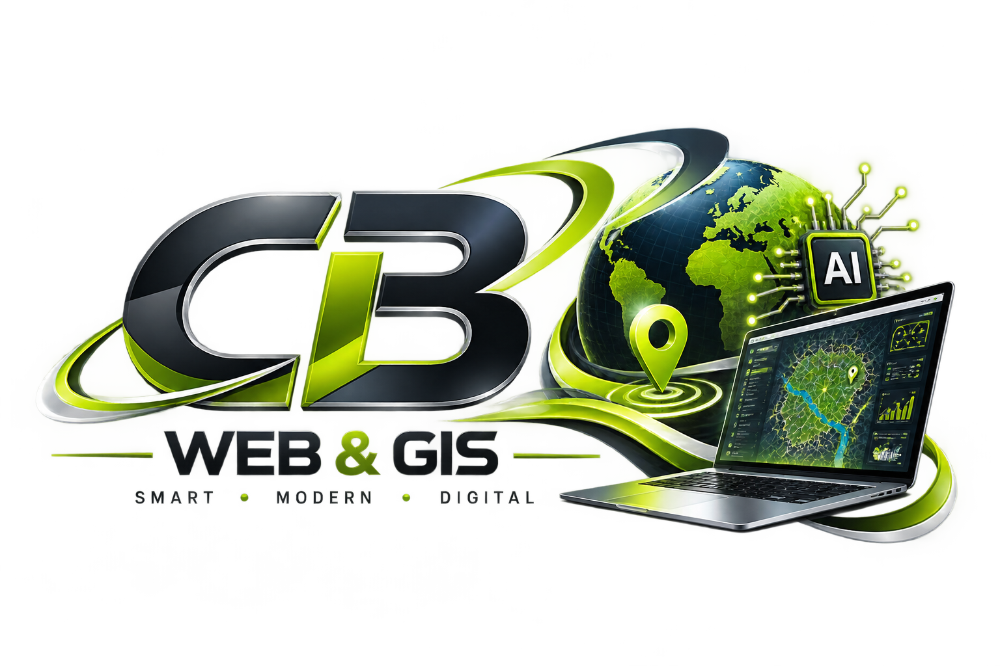

Web Design
Modern, responsive websites built to help businesses present services clearly and make it easier for customers to take action.
ABOUT CB WEB & GIS
CB Web & GIS combines web design, geographic information systems and practical AI to help businesses improve visibility, simplify customer access and make better use of digital tools.
WHO WE ARE
CB Web & GIS is a digital solutions service focused on helping businesses use modern technology in practical and useful ways.
We combine website development with GIS, interactive mapping and AI solutions. This allows us to build more than just attractive websites — we can create digital tools that help businesses communicate, understand locations and work more efficiently.
Our approach is simple: understand the business first, then choose the technology that can genuinely help it grow.

WHAT WE BRING TOGETHER
Different businesses need different digital solutions. By combining several areas of expertise, we can choose the tools that best fit the real business need.
Modern, responsive websites built to help businesses present services clearly and make it easier for customers to take action.
Interactive maps and location-based solutions that help businesses communicate geographic information and understand where things happen.
Simple AI-powered tools that can support customer communication, repetitive work and everyday digital workflows.
READY TO WORK TOGETHER?
Whether you need a modern website, an interactive map or a practical AI solution, we can help you choose an approach that fits your business goals.
Get a Free Quote →